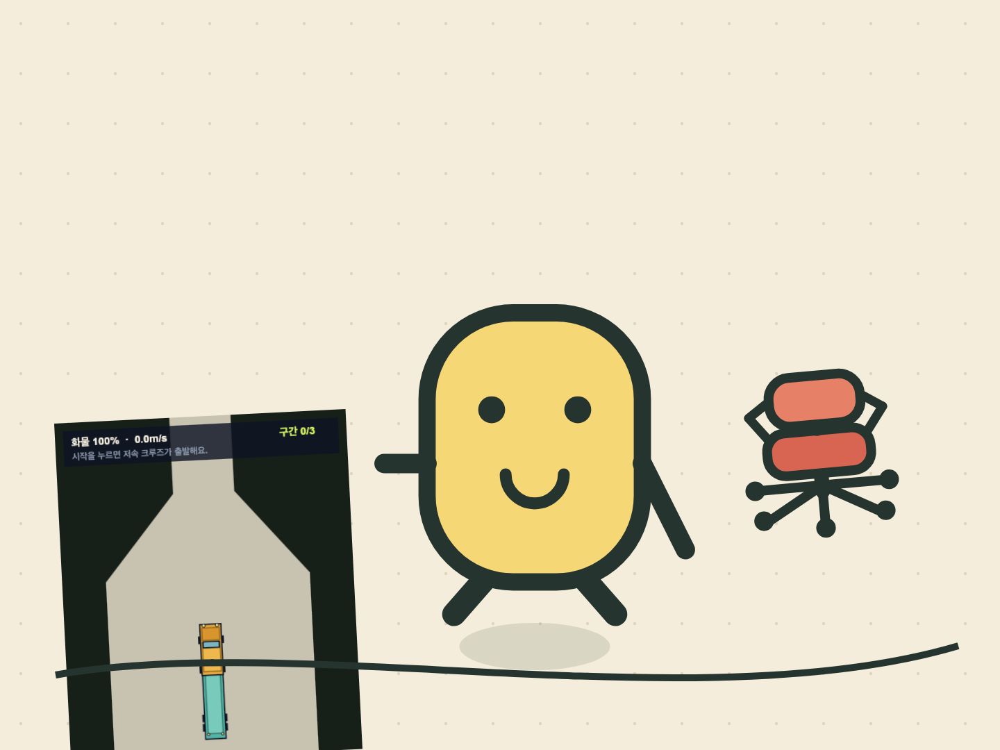

의자야,
주차하자
돌진하는 사무용 의자를 유도하고 피해서 주차 칸에 자연스럽게 멈춰 세웁니다.

영상에서 시작한 엉뚱한 게임들. 이번엔 한 손으로 직접 플레이하세요.
YouTube에서 보기Android 스토어 출시 준비 중
AI로 재해석해 만든 세 개의 모바일 게임을 하나의 오프라인 앱에 담았습니다. 앱 안에서 게임을 즉석 생성하는 서비스는 아닙니다.
돌진하는 사무용 의자를 유도하고 피해서 주차 칸에 자연스럽게 멈춰 세웁니다.
자동으로 달리는 노란 캐릭터와 함께, 화면을 떠도는 점프 버튼을 잡습니다.
앞차뿐 아니라 긴 트레일러까지 조향해 좁은 다리 너머 배송선에 넣습니다.
새 게임을 실제로 플레이해 보는 장면은 YouTube에서 확인하세요. 문제 제보와 문의는 공개 GitHub Issues에서 받습니다. 민감한 개인정보는 작성하지 마세요.